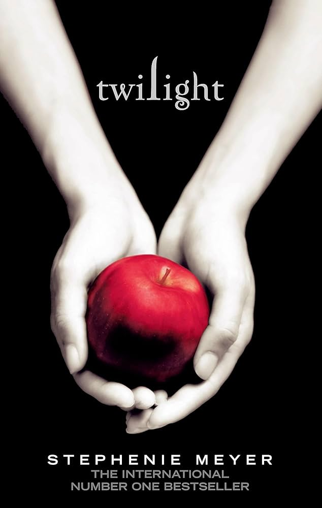

Sofía Tavares
I'm 19 years old, passionate about animation and character design, and my goal in life is to work at Nintendo as a concept artist.
Education
Summer Hill
2007 - 2010
Colegio Pedregal
2010 - 2016
Colegio Cervantes Bosque
2016 - 2019

Colegio Cervantes Costa Rica
2019 - 2022

Universidad Panamericana
2022 - 2027
Skills
- Problem Solving
- Teamwork
- Fast Learning
- 2D and 3D animation
- Adobe usage
Hobbies
- Watercolor painting
- Digital drawing
- Singing
- Drums
Favorite Destinations
View more about my favorite destinationsFavorite Foods
Top 5:
- Korean
- Japanese
- Italian
- Indian
- Mexican
Bottom 3:
- French
- Spanish
- Greek
Favorite Books, Movies, and TV Shows
Hush Hush:
Follows 16-year-old high school student Nora Grey, who befriends new student, Patch, and finds herself drawn to his brooding charm against her better judgment. As Nora starts seeking answers about who Patch really is, she unwittingly gets caught in the crosshairs of an ancient battle between fallen angels and the immortal a struggle that comes to threaten her life and reveals a shocking secret about her own identity.
The Hunger Games:
In a dystopian future, the totalitarian nation of Panem is divided into 12 districts and the Capitol. Each year two young representatives from each district are selected by lottery to participate in The Hunger Games. Part entertainment, part brutal retribution for a past rebellion, the televised games are broadcast throughout Panem. The 24 participants are forced to eliminate their competitors while the citizens of Panem are required to watch. When 16-year-old Katniss' young sister, Prim, is selected as District 12's female representative, Katniss volunteers to take her place. She and her male counterpart, Peeta, are pitted against bigger, stronger representatives, some of whom have trained for this their whole lives.

Twilight:
Bella Swan has always been a little bit different. Never one to run with the crowd, Bella never cared about fitting in with the trendy girls at her Phoenix, Arizona high school. When her mother remarries and Bella chooses to live with her father in the rainy little town of Forks, Washington, she doesn't expect much of anything to change. But things do change when she meets the mysterious and dazzlingly beautiful Edward Cullen. For Edward is nothing like any boy she's ever met. He's nothing like anyone she's ever met, period. He's intelligent and witty, and he seems to see straight into her soul. In no time at all, they are swept up in a passionate and decidedly unorthodox romance - unorthodox because Edward really isn't like the other boys. He can run faster than a mountain lion. He can stop a moving car with his bare hands. Oh, and he hasn't aged since 1918. Like all vampires, he's immortal. That's right - vampire. But he doesn't have fangs - that's just in the movies. And he doesn't drink human blood, though Edward and his family are unique among vampires in that lifestyle choice. To Edward, Bella is that thing he has waited 90 years for - a soul mate. But the closer they get, the more Edward must struggle to resist the primal pull of her scent, which could send him into an uncontrollable frenzy. Somehow or other, they will have to manage their unmanageable love. But when unexpected visitors come to town and realize that there is a human among them Edward must fight to save Bella? A modern, visual, and visceral Romeo and Juliet story of the ultimate forbidden love affair - between vampire and mortal.
Twilight

10 things I hate about you:
Adapted from William Shakespeare's play "The Taming of the Shrew," 10 Things I Hate About You starts off with Cameron, new student at Padua High, sitting in the office of the quirky guidance counselor Ms. Perky. He is then shown around the school by Michael, who will become his best friend. During his tour is when Cameron first sees Bianca Stratford, a beautiful sophomore with one problem: she isn't allowed to date. And neither is her "shrew" sister, Katarina, a senior who loves indie rock and feminist prose and hates conformity. But Kat and Bianca's father alters his house rule: now, Bianca can date... as long as Kat has a date, too. Now, in order for Cameron to date Bianca, he has to find someone to date Kat. So Michael helps him enlist the help of pretty-boy/jerk/model Joey Donner, tricking him into thinking that *he* will get to take Bianca out if he pays someone to take out Kat. His choice: Patrick Verona, a bad-boy with a mysterious reputation--some say he ate a live duck once, others that he lit a state trooper on fire, and even more claim that he had a brief porn career. Will Patrick win Kat's heart? Will Cameron win Bianca's? Or will everything hit the fan...?
Easy A:
After a little white lie about losing her virginity gets out, a clean cut high school girl sees her life paralleling Hester Prynne's in "The Scarlet Letter," which she is currently studying in school - until she decides to use the rumor mill to advance her social and financial standing
Criminal Minds:
Based in Quantico, Virginia, the Behavioral Analysis Unit (B.A.U.) is a subsection of the F.B.I. Called in by local Police departments to assist in solving crimes of a serial and/or extremely violent nature where the perpetrator is unknown (referred to by the Unit as the unknown subject or "unsub" for short), the B.A.U. uses the controversial scientific art of profiling to track and apprehend the unsub. Profiling entails coming up with basic characteristics of the unsub and the victims (referred to as the victimology), using evidence from the case and matching that information to historic precedents and psychological analyses as a means to solve the case. Because of the nature of the work conducted by the B.A.U. - the work being time consuming and psychologically demanding - its members are fiercely loyal to the Unit and to its other members. Also because of the work's overall demanding nature, not many members of the B.A.U. have been able to maintain a happy or stable family life
Grey's Anatomy:
A medical and romantic drama centered around Meredith Grey, an aspiring surgeon and daughter of one of the best surgeons, Dr. Ellis Grey. Throughout the series, Meredith goes through professional and personal challenges along with fellow surgeons at Seattle Grace Hospital.
Gilmore Girls:
Thirty-two year old single mom, Lorelai, lives with her teenage daughter Rory in the small town of Stars Hollow, Connecticut, with crazy neighbors and many ups and downs.Family
| Name | Last Name | Birthday |
|---|---|---|
| Esau Heli | Tavares Cordoba | Sep 25, 1971 |
| Yadira Lizeth | Gonzalez Hernandez | April 12, 1981 |
| Zinthia Carolina | Gonzalez Hernandez | Feb 4, 1977 |